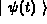
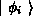
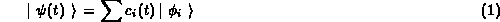
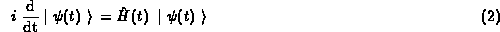
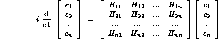

Department of Physics, University of Bergen, Bergen, Norway
Time-dependent Schrödinger equation for description of atomic collisions The approach to atomic collisions used in this work is called semiclassical, referring to the fact that only the electrons are treated as quantal particles, while the atomic motion is simulated by a classical trajectory. This leads to time-dependent Schrödinger equation for the active electrons, in the present case one active electron. The matrix formulation of this problem arises from expansion of the unknown electron wavefunction

in a set of basis functions
, much in analogy with Fourier series or expansions using orthogonal polynomials
The unknown quantities to be found are the expansion coefficients, which form a vector. In this formulation, the time-dependent Schrödinger equation

is replaced by a set of coupled differential equations, which are conveniently expressed by matrix notation

In practical work, the most demanding part of the analysis is the evaluation of matrix elements of the hamitonian between the basis states. This contribution describes one particular task, related to finding instantaneous eigenstates of the hamiltonian. The problem is close to finding the molecular orbitals in the so called LCAO (linear combination of atomic orbitals) approach.
The method is based on earlier work of Hansen and Kocbach, using momentum wavefunctions for hydrogen-like states on each of the two colliding nuclei and obtaining analytic expressions for the matrix elements. These expressions are in the form of text strings, which are directly used as programs for numerical evaluation.
The setup of the problem is performed by a MATLAB program, which also calls the integrated MAPLE kernel for symbolic manipulations and evaluations. Finally, the same MATLAB program also uses the above mentioned text representations of the analytic formulae to perform numeric evaluations. This is made possible by MATLAB's function eval() (this takes any text and treats it as a program). The data are then further treated by the numerical part of MATLAB.
MATLAB is first of all optimized for numerical calculations, so that the presented approach is quite efficient with respect to the speed of numerical calculations.
For more information junbai@kvark.fi.uib.no.